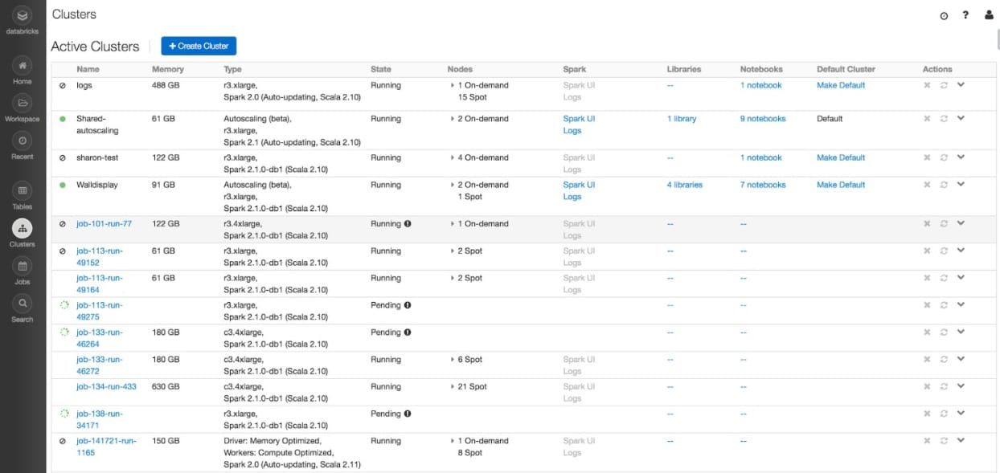

Making big data simple
How I approach designs in a complex domain

Background
Databricks provides a unified analytics platform to accelerate innovation by unifying data science, engineering, and business. I joined the company since September 2015 and had worked on several released features, and touched almost every part of the product. See below a high-level view of who we are building for and how our product works.

Role
A designer at a startup wears multiple hats. I not only drive product design from ideation to implementation but also use our product for data-informed designs. For brevity, I listed 2 case studies as below to demonstrate how I approach designs at Databricks.
Visualizing streaming information case study

The Challenge
Structured streaming is one of the strategic projects we have been working on since last year to address the popular real-time data processing use case. As the backend got more mature, we started to think about the interface: when running a streaming task in our notebook, how to inform the user what’s going on?

Before: display state details from raw data
Solution
It was hard to consume the raw data generated every few seconds (see the image above). So we organized the information and visualized the progress of a streaming task to give users a better view of their task.

After: visualize state progress
Design Process

Expert interview: The key challenge for me was: how can I organize the streaming information if I know nothing about it? Luckily we have a few experts. So I asked them lots of questions to understand the data and its value to the user.
More research on my own: After the expert interview, I searched the terminologies I did not understand well to get a better picture of the domain. I also looked up similar products to explore the visualizations for showing the progress.
Design together with the engineers: It was helpful to whiteboard the information structure and the visualizations with the engineers. It clarified questions, allowed us to build on each other's ideas and reach consensus quickly.

Iterate and Ship It: I went back to work in Sketch, explored different layouts, collected feedback from a broader group and iterated quickly. After getting a signed off from our broader group, I added the design specs and checked in often until we shipped it.


Outcome
By working closely with our two engineers and getting feedback regularly from other stakeholders, we were able to design and implement the project in one sprint (2 weeks). The visualization also helped us take structured streaming to production.
Redesigning Cluster List Page Case Study
The Challenge
Clusters are groups of computers treated as a single computer to execute code and process data. The cluster list page is the second most visited page in the product, but after adding various new features, soon it became cluttered and outdated. How can we redesign it to improve its usability?
Before
Solution
After
In the new design, we made the following changes:
- Add filter, sorting, and creator column. Users can easily find his/her cluster and take actions.
- Change two sections of active and terminated clusters to interactive and jobs clusters.
- Business needs: Easier for users to understand interactive and job clusters are priced differently.
- Different personas (data engineer vs. data scientist): The jobs clusters won't come in data scientists' way.
- Reflect new conceptual model: With us introducing the persistent cluster concept, users often start a terminated cluster. With the new design, active and terminated clusters won't jump around in 2 different tables.
- Reduce clutter and inconsistency. Remove default cluster column (legacy code). Group all the links and actions to the right side, and show actions when hover.
Design Process
The solution may look simple, but it took a ton of consideration and discussion.
User Research: First I collected all the related feedback from emails, forums, our JIRA system, and previous research to see the frequent requests.
Data Analysis: I also wrote a few queries to see the usage data and where the traffic comes and goes. Based on the data we decided to keep the links and remove the caret.
Design in a small group: I worked closely with a product manager and an engineer to define the scope and brainstorm ideas.
Communicate broadly about the changes: Since the cluster list page is a commonly used page, everyone inside the company may have opinions on its new design. It is important to broadcast the changes so people can share their feedback as early as possible. As we expected, we got a lot of feedback and were able to address those at an early stage.
Iteration: Based on the feedback we knew it was hard to take columns away. So we explored other techniques to make it look less cluttered, such as truncation and hover actions. At last, we agreed on one version and kept people updated about the changes.
Ship It: After the implementation, we had another round of feedback coming in after people played with it. For some, we explained the rationale behind and defended the design. For others, we had a quick discussion to pick others' brain and improve the design further.
Outcome
The revamp of cluster list page provided more features (filter and sorting on the table) to our users and got a fresh look which we hope our customers love. The design took three weeks, but it's all worth it as the user experience ends up better.
A Few More Words
Designing in a complex domain is challenging. But working together with the awesome teams makes it easier. I am happy to share more about the scenes behind our released features, or talk about the below topics.
- Designing enterprise software
- Design culture at a startup
- Design with data
Feel free to get in touch. Or find me on LinkedIn.